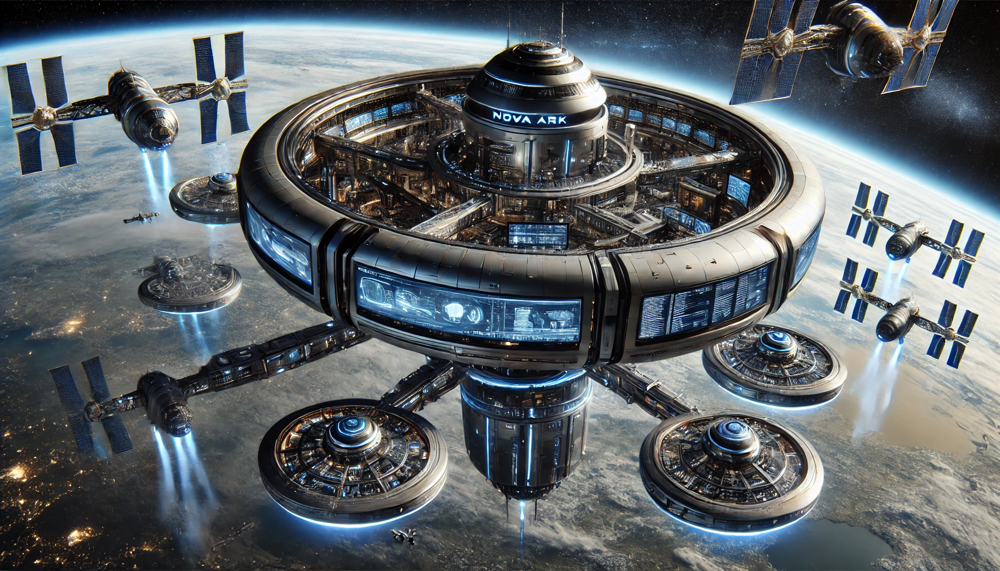

Космическа станция "Нова Арк"

На космическата станция "Нова Арк" д-р Елис Картер беше заета с анализиране на последните данни от квантовите симулации. Станцията, която беше в орбита около Земята, беше напълно автоматизирана и оборудвана с най-модерната технология.

Елис беше открила странни флуктуации в квантовите изчисления, които предсказваха катастрофа с невероятна точност. Тя знаеше, че трябва да действа бързо.
Капитан Лиам Дрейк, който беше на станцията за рутинна проверка, беше извикан в лабораторията на Елис.
"Лиам, имам нужда от твоята помощ," каза тя, докато му показваше данните. "Тези флуктуации са нещо, което никога преди не съм виждала. Ако са верни, Земята е в сериозна опасност."
Лиам, с белега над лявото си око, се замисли за момент. "Какво предлагаш?" попита той.
"Трябва да изследваме произхода на тези данни. Те сочат към планетата Ксилон-9," отговори Елис.
Зои Мейсън, която беше на станцията, за да подобри киберсигурността, беше включена в разговора. "Аз мога да помогна с анализирането на данните и да видя дали има нещо подозрително в системата," предложи тя.